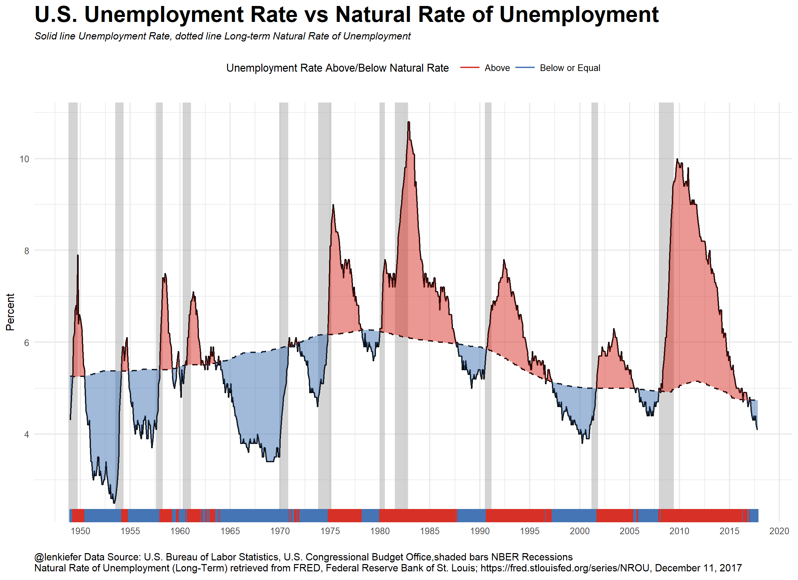
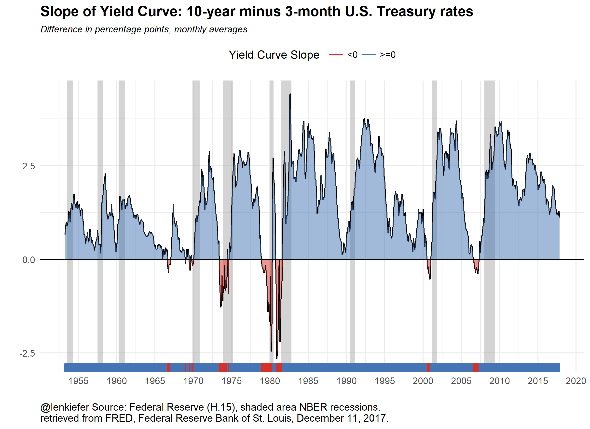

LET’S TAKE A LOOK AT RECENT U.S. macroeconomic trends by making a couple plots with R code.
Since we’re going to be looking at U.S. macroeconomic data, the data we’ll need is available in the St. Louis Federal Reserve Bank Economic Database FRED. Below I’ll walk you through creating the plots.
Where are we in the business cycle
After the BLS released their employment situation report (the Jobs report) last week I tweeted out:
After adding 228k jobs in November (report: https://t.co/IBKu8hMrWr) that's 86 consecutive months of job gains. pic.twitter.com/Nek0FOiRAi
— Leonard Kiefer (@lenkiefer) December 8, 2017
At 86 months we are currently in the longest streak of positive monthly employment gains in U.S. postwar history. The recession is getting long in the tooth. It doesn’t seem like a recession is imminent, but economists have not done a great job of forecasting recessions. Forecasting is, after all, hard work.
We talked earlier about some possible ways to model recessions. We won’t do that here. Instead we will just look at two common recession indicators: the unemployment rate relative to estimates of its natural rate and the slope of the yield curve.
Unemployment Plot

Estimates of the natural rate of unemployment come from the Congressional Budget Office. Details can be found here. The unemployment rate is estimated by the Bureau of Labor Statistics. The difference between the unemployment rate and the natural rate of unemployment is the unemployment gap. In many economic models this gap, or an output gap measures how far the economy is from potential.
A positive unemployment gap is neither necessary nor sufficient for a recession (see a large percentage of modern macroeconomic theory for perspectives) but a positive gap has preceded the past three recessions.
Slope of Yield Curve Plot
The slope of the yield curve, or the difference between short- and long-term interest rates is another indicator of interest. Consider this plot.

A negative or inverted yield curve is another indicator analysts use for forecasting a recession. The plot above shows monthly values, though you can easily get daily values via FRED or the U.S. Treasury see here. Note only two of the past three recessions had a negative yield curve slope as measured by the difference between monthly average 10-year and 3-month Treasurys. Still, a flattening and especially and inversion of the yield curve is widely seen as a strong recession indicator. Note that while the yield curve slope is flattening it is far from inverted. Financial markets can move fast though.
Useful charts?
I think these are interesting charts to look at and ponder. You need more analysis, but trends in these variables are one thing you might want to look at. Let’s talk about how you can build these charts.
R code
The code below will get our data ready for plotting. See for example this post for more on using FRED and R with the very handy tidyquant package.
#####################################################################################
## Step 1: Load Libraries ###
#####################################################################################
library(tidyverse)
library(tidyquant)
library(scales)
library(tibbletime)
#####################################################################################
## Step 2: go get data ###
#####################################################################################
# Set up tickers
tickers<- c("GS10", # 10-year constant maturity Treasury yield
"TB3MS", # 3-month Tbill rate
"UNRATE", # unemployment rate
"NROU" ) # estimate of natural rate of unemployment from U.S. Congressional Budget Office
# download data via FRED
df2<-tq_get(tickers, # get selected symbols
get="economic.data", # use FRED
from="1954-01-01") # go from 1954 forward
#####################################################################################
## Step 3: get data ready for analysis ###
#####################################################################################
df2 %>%
spread(symbol,price) -> df3
# Convert quarterly naturla rate (NROU) data to monthly data by "filling down" using na.locf
df3 %>%
mutate(NROU2=na.locf(NROU,na.rm=F)) %>%
mutate(UGAP2=UNRATE-NROU2)-> df3
# Create some indicators for shaded plot
df3 <- mutate( df3,
up=ifelse(UNRATE>NROU2,UNRATE,NROU2),
down=ifelse(UNRATE<NROU2,UNRATE,NROU2),
up2=ifelse(GS10>TB3MS,GS10-TB3MS,0),
down2=ifelse(GS10<TB3MS,GS10-TB3MS,0)
)
# Set up recession indicators
recessions.df = read.table(textConnection(
"Peak, Trough
1948-11-01, 1949-10-01
1953-07-01, 1954-05-01
1957-08-01, 1958-04-01
1960-04-01, 1961-02-01
1969-12-01, 1970-11-01
1973-11-01, 1975-03-01
1980-01-01, 1980-07-01
1981-07-01, 1982-11-01
1990-07-01, 1991-03-01
2001-03-01, 2001-11-01
2007-12-01, 2009-06-01"), sep=',',
colClasses=c('Date', 'Date'), header=TRUE)Note that the estimates of the natural rate of unemployment for the U.S. Congressional Budget Office are quarterly but the rest of our data is monthly. We can “fill down” the unemployment rate between quarters with the zoo::na.locf() function see here.
Now with our data ready, we can create our plots:
#####################################################################################
## Step 4: make plots ###
#####################################################################################
# Unemployment rate plot
g<-
ggplot(data=filter(df3,!is.na(NROU2)),aes(x=date,y=UNRATE))+
geom_rect(data=recessions.df, inherit.aes=F, aes(xmin=Peak, xmax=Trough, ymin=-Inf, ymax=+Inf), fill='darkgray', alpha=0.5) +
geom_line(color="black")+
geom_line(linetype=2,aes(y=NROU2))+
geom_ribbon(aes(ymin=UNRATE,ymax=down),fill="#d73027",alpha=0.5)+
geom_ribbon(aes(ymin=UNRATE,ymax=up),fill="#4575b4",alpha=0.5) +
scale_x_date(date_breaks="5 years",date_labels="%Y")+
scale_y_continuous(sec.axis=dup_axis())+
theme_minimal(base_size=8)+
theme(legend.position="top",
plot.caption=element_text(hjust=0),
plot.subtitle=element_text(face="italic"),
plot.title=element_text(size=16,face="bold"))+
labs(x="",y="Percent",
title="U.S. Unemployment Rate vs Natural Rate of Unemployment",
subtitle="Solid line Unemployment Rate, dotted line Long-term Natural Rate of Unemployment",
caption="@lenkiefer Data Source: U.S. Bureau of Labor Statistics, U.S. Congressional Budget Office,shaded bars NBER Recessions\nNatural Rate of Unemployment (Long-Term) retrieved from FRED, Federal Reserve Bank of St. Louis; https://fred.stlouisfed.org/series/NROU, December 11, 2017")+
geom_rug(aes(color=ifelse(UNRATE<=NROU2,"Below or Equal","Above")),sides="b")+
scale_color_manual(values=c("#d73027","#4575b4"),name="Unemployment Rate Above/Below Natural Rate ")
# Slope of yield curve plot
g2<-
ggplot(data=filter(df3,!is.na(TB3MS) & !is.na(GS10)),aes(x=date,y=GS10-TB3MS))+
geom_rect(data=filter(recessions.df,year(Peak)>1952), inherit.aes=F, aes(xmin=Peak, xmax=Trough, ymin=-Inf, ymax=+Inf), fill='darkgray', alpha=0.5) +
geom_line(color="black")+
theme_minimal()+
geom_ribbon(aes(ymin=0,ymax=down2),fill="#d73027",alpha=0.5)+
geom_ribbon(aes(ymin=up2,ymax=0),fill="#4575b4",alpha=0.5) +
geom_rug(aes(color=ifelse(GS10>=TB3MS,">=0","<0")),sides="b")+
scale_color_manual(values=c("#d73027","#4575b4"),name="Yield Curve Slope ")+
scale_x_date(date_breaks="5 years",date_labels="%Y")+
scale_y_continuous(sec.axis=dup_axis())+
labs(x="",y="Difference in percentage points",title="Slope of Yield Curve: 10-year minus 3-month U.S. Treasury rates",
subtitle="Difference in percentage points, monthly averages",
caption="@lenkiefer Source: Federal Reserve (H.15), shaded area NBER recessions.\nretrieved from FRED, Federal Reserve Bank of St. Louis, December 11, 2017.")+
geom_hline(yintercept=0,color="black")+
theme(legend.position="top",
plot.caption=element_text(hjust=0),
plot.subtitle=element_text(face="italic",size=9),
plot.title=element_text(face="bold",size=14))